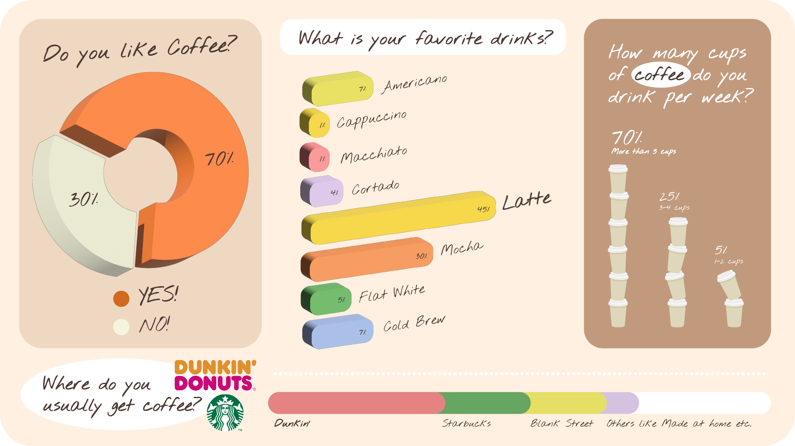

This presentation visualized the result in the topic of "How's Hunter student like about the coffee?" I devided to 4 sections to present the result in each question that I made. Left side, I used the charting tool create circle graph and colored with 2 colors to make it different from each other, this one is the main question for this research. Then I used bar graph tools to shows the types of coffee that people love inclueded percentage and name in each bar for the viewer to easily navigate the results. Moreover I also play with the illustration by using a cup of coffee to shows the amount of cup of coffee that people usually have per day. I want to make this presentation effective for the student especially who were the same as my generation to enjoyed with the visualization.